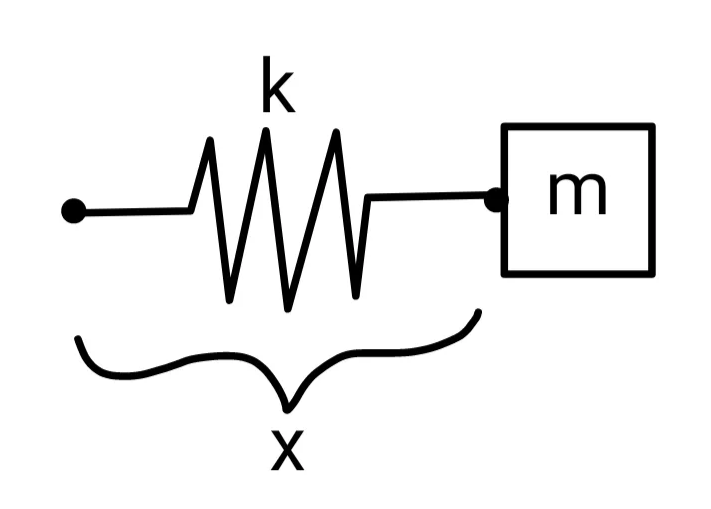

1.4. Rules for derivatives#
1.4.1. Product rule#
The product rule is used to differentiate functions that can be written as the product of two smaller functions.
To demonstrate this rule, consider \(f(x) = (x-3)(x-1)\). Previously, we would have needed to expand this function before differentiating:
With the product rule, instead we recognize
so
This example is a little silly, but the product rule is a life saver for functions that are hard to expand!
\(f(x) = (x+1)(2x^2 + 5)(5x^3-4)\)
Identify:
(1.63)#\[\begin{equation} u = x+1 \qquad v = (2x^2+5)(5x^3-4) \end{equation}\]so
(1.64)#\[\begin{equation} f'(x) = (x+1)v' + (2x^2 +3)(5x^3-4)(1) \end{equation}\]The derivative \(v'\) can be evaluated by a second product rule!
(1.65)#\[\begin{align} u &= 2x^2+5 & v &= 5x^3-4 \\ u' &= 4x & v' &= 15x^2 \end{align}\]finally giving
(1.66)#\[\begin{align} f'(x) &= (x+1)[(2x^2+3)(15x^2) + (5x^3-4)(4x)] \\ &+ (2x^2+5)(5x^3-4) \end{align}\]\(f(x) = \dfrac{1}{x} e^x\)
Identify:
(1.67)#\[\begin{align} u &= \frac{1}{x} & v &= e^x \\ u' &= -\frac{1}{x^2} & v' &= e^x \end{align}\]so
(1.68)#\[\begin{align} f'(x) &= \frac{1}{x}e^x + e^x(-\frac{1}{x^2}) \\ &= e^x\left(\frac{1}{x} - \frac{1}{x^2}\right) \end{align}\]\(f(x) = (x^2+3)\ln x\)
Identify:
(1.69)#\[\begin{align} u &= x^2+3 & v &= \ln(x) \\ u' &= 2x & v' &= \frac{1}{x} \end{align}\]so
(1.70)#\[\begin{align} f'(x) &= (x^2+3)\cdot\frac{1}{x} + (\ln x)(2x) \\ &= \frac{x^2+3}{x} + 2x\ln x \end{align}\]
1.4.2. Quotient Rule#
Hint
One mnemonic that may or may not help remember this:
If the quotient rule you wish to know, it’s “low-d-high less high-d-low”… then draw the line and, down below, denominator squared will go.
To demonstrate this rule, consider \(f(x) = (x-1)/x\). Previously, we would have needed to separate the numerator before differentiating:
With the qoutient rule, instead we recognize
so
This was obviously harder than the old way, but there are other cases where it is helpful to do the quotient rule!
\(\displaystyle f(x) = \frac{x^2 -1}{x^4 + 2}\)
(1.75)#\[\begin{align} u &= x^2 -1 & v &= x^4 +2 \\ u' &= 2x & v' &= 4x^3 \end{align}\]so
(1.76)#\[\begin{align} f'(x) &= \frac{ (x^4 + 2) \cdot (2x) - (x^2 - 1) \cdot (4x^3)}{(x^4 +2)^2}\\ &= \frac{2x^5 + 4x^2 - 4x^5 +4x^3}{x^8 + 2x^4 + 4} \end{align}\]\(\displaystyle f(x) = \frac{e^{x}}{1 + x}\)
(1.77)#\[\begin{align} u &= e^{x} & v &= 1 + x \\ u' &= e^{x} & v' &= 1 \end{align}\]so
(1.78)#\[\begin{align} f'(x) &= \frac{(1 + x) \cdot e^{x} - e^{x} \cdot 1}{(1 + x)^2} \\ &= \frac{x e^{x}}{(1 + x)^2} \end{align}\]\(\displaystyle f(x) = \frac{(x - 1)(x^2 - 2x)}{x^4}\)
(1.79)#\[\begin{align} u &= & v &= x^4\\ u' &= 3x^2 - 6x + 2 & v' &= 4x^3 \\ \end{align}\]so
(1.80)#\[\begin{align} f'(x) &= \frac{x^4 \cdot (3x^2-6x+2) - (x^3 -3x^2 +2x) \cdot 4x^3}{x^8} \\ &= \frac{-x^6 + 6x^5 - 6x^4}{x^8} \\ &= -\frac{1}{x^2} + \frac{6}{x^3} - \frac{6}{x^4} \end{align}\]Note, though, that in this case we could also have expanded the numerator, divided through by \(x^8\), and differentiated term-by-term to arrive at the same answer. The faster route depends on the problem!
1.4.3. Chain rule#
The chain rule is used to differentiate composite functions, when the “inside” of the function is more complicated than what we know.
To demonstrate this rule, consider \(f(x) = (x-1)^2\). Previously, we would have needed to expand this function before differentiating:
With the chain rule, instead we recognize
so
The results match! Some additional examples:
\(f(x) = e^{x^2}\)
Make the replacement \(u = x^2\):
(1.85)#\[\begin{align} u &= x^2 & f &= e^u \\ u' &= 2x & f' &= e^u \end{align}\]so
(1.86)#\[\begin{equation} f'(x) = \dd{}{f}{u} \dd{}{u}{x} = e^{u} \dd{}{u}{x} = e^{x^2} \cdot 2x \end{equation}\]\(f(x) = \ln(1 + 2x)\)
Make the replacement \(u = 1+2x\):
(1.87)#\[\begin{align} u &= 1 + 2x & f &= \ln u \\ u' &= 2 & f' &= \frac{1}{u} \end{align}\]so
(1.88)#\[\begin{equation} f'(x) = \dd{}{f}{u} \dd{}{u}{x} = \frac{1}{u} \dd{}{u}{x} = \frac{2}{1 + 2x} \end{equation}\]\(f(x) = \dfrac{2}{1 + 2x}\)
Make the replacement \(u = 1+2x\):
(1.89)#\[\begin{align} u &= 1 + 2x & f &= 2u^{-1} \\ u' &= 2 & f' &= -2u^{-2} \end{align}\]so
(1.90)#\[\begin{equation} f'(x) = \dd{}{f}{u} \dd{}{u}{x} = -2u^{-2} \cdot \dd{}{u}{x} = \frac{-4}{(1 + 2x)^2} \end{equation}\]
1.4.4. Trigonometric functions#
\(f(x)\) |
\(f'(x)\) |
\(f(x)\) |
\(f'(x)\) |
|---|---|---|---|
\(\sin x\) |
\(\cos x\) |
\(\csc x\) |
\(-\csc x \cot x\) |
\(\cos x\) |
\(-\sin x\) |
\(\sec(x)\) |
\(\sec x \tan x\) |
\(\tan x\) |
\(\sec^2 x\) |
\(\cot x\) |
\(-\csc^2 x\) |
All of these follow from knowing only two derivatives: \(\sin x\) and \(\cos x\)! For example, to find the derivative of \(\tan x\), use the quotient rule:
Or, to find the derivative of \(\csc x\), use the chain rule:
Example: Harmonic oscillator
A harmonic oscillator is a mass m on a Hookean spring. The spring force is \(F = -kx\), where k is the spring constant and x is the displacement of the mass.
{kind=link}
If the mass is initially displaced to \(x(0)\), it will then move according to:
where

How fast is the oscillator moving at any given time? When is the oscillator moving fastest?
We want to calculate the velocity \(v = x'(t)\). Use the chain rule with:
so
A function is at an extrema when its derivative is zero. If the function is velocity, this derivative is the acceleration a and is equal to zero, \(a = v' = 0\). This means the mass is not accelerating! Using the chain rule again:
The roots occur at \(t = T/4\) or \(3T/4\), when \(x = 0\) and the spring is no longer stretched. All potential energy has been converted to kinetic energy!
1.4.5. Skill builder problems#
\(f(x) = 3 \cos x + \sin x\)
Solution
(1.98)#\[\begin{align} f' &= 3 \dd{}{}{x}(\cos x) + 4 \dd{}{}{x}(\sin x)\\ &= -3\sin x + 4\cos x \end{align}\]\(f(x) = 2 \sin x \cos x\)
\(f(x) = \sin 2x\)
\(f(x) = \tan({x^2+2x+3})\)
\(f(x) = e^{\cos^2 x}\)
Solution
Use the chain rule with
(1.105)#\[\begin{align} u &= \cos^2 x & f = e^{u}\\ u' &= \dd{}{}{x}(\cos^2 x) & f' = e^{u} \end{align}\]So
(1.106)#\[\begin{equation} f' = e^{u} u' = e^{\cos^2 x} \dd{}{}{x}(\cos^2 x) \end{equation}\]Use the chain rule again with
(1.107)#\[\begin{align} u &= \cos x & f = u^{2}\\ u' &= -\sin x & f' = 2u\\ \end{align}\]So
(1.108)#\[\begin{align} f' &= e^{\cos^2 x}(2uu')\\ &= e^{\cos^2 x}(2\cos x \cdot -\sin x)\\ &= -2 \sin x \cos x e^{\cos^2 x}\\ \end{align}\]